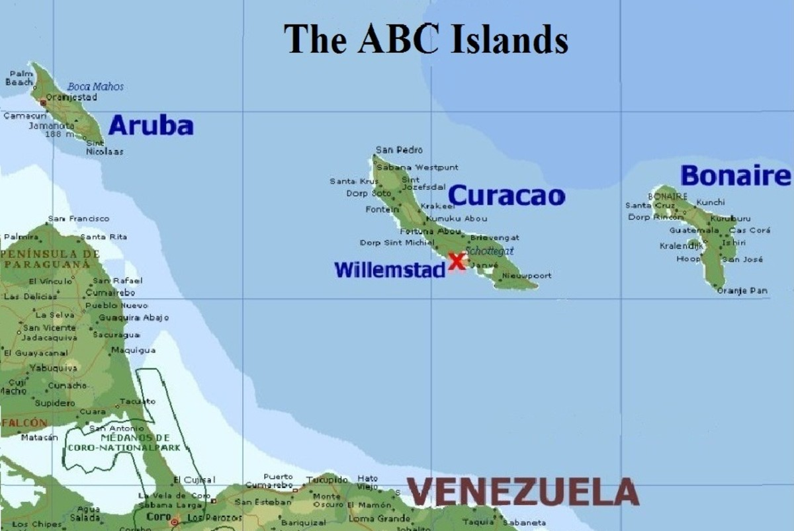

Home
Aruba
Bonaire
Curaçao
Welcome to the ABC Islands!

Located off the coast of Venezuela, the ABC Islands is home to some of the most beautiful islands in the entire Caribbean.
At first glance you might not be familiar with this chain of islands, but you have probably heard
of its most popular islands such as Aruba and Curaçao. This website contains all of the information you need to know
about these beautiful islands.
Basic information about the ABC Islands
| Name |
Capital |
Area |
Population |
| Aruba |
Oranjestad |
180 km2 |
112,309 |
| Bonaire |
Kralendijk |
288 km2 |
20,104 |
| Curaçao |
Willemstad |
444 km2 |
158,665 |
Why the ABC Islands?
The ABC Islands offers a whole lot of activities for tourists to experience from its natural beauty
to its elegant culture. Here are just some of the reasons visitors love the ABC Islands:
- Breathtaking Beaches: Whether it be the pristine shores of Aruba, the picturesque coves of Curaçao, or the
calm sands of Bonaire, the ABC Islands have a lot to offer from its natural beauty.
- Vibrant Diversity: The mixture of European, Indigneous, and African cultures on each island have contributed to
to the vibrant diversity of the islands. Visitors can immerse themselves in coloful festivals, exotic dishes,
and rich music that the islands have to offer.
- Plenty of Historical Sites: Tourists can visits the colorful shops of Willemstad, the capital of Curaçao,
or enjoy a nice walk near Fort Zoutman Historical Museum in Aruba.
- Fun Activities:Vistors will enjoy shopping and dining at the open-air Renaissance Mall & Rif Fort, located in the heart
of Willemstad, Curaçao.
- Exquisite Cuisine: From Aruba's stuffed pastechi to Curaçao's Bitterballen, visitors will love the dishes
the islands have to offer.
- Great Weather: With warm temperatures all year long, visitors will have ample time to plan their trip
to Aruba, Bonaire, or Curaçao
- Beautiful Marine Life: From vibrant coral reefs to diverse species of fish, the islands are an excelent place for
diving and snorkeling year round.